Chapter 3
Thought process and line of thinking
3.1 What is the plan?
You don’t learn to play chess in five minutes. And you will not understand the game within one week. This may be an unpleasant observation for a player who is hoping to increase his playing strength without much effort. But you won’t be discouraged that quickly, will you?
It is not easy to prepare for a game. How will you go about it? Where do you start? Which book will you take up? Which computer program will you use for support? And how will you mentally arm yourself for the battle ahead? Let’s look at a small strategic test first.
Have you found a plan? And have you written down the move that you would play? We will return to this in the next section.
3.2 The key to success
There are no two ways about this. Making the right assessment and building up a reasoning which is founded on logic – this is the key to success. First we have to discover which factors are important and which aren’t. Only after that will we be able to choose the correct plan. And then, accurate calculation will still be necessary. All in all, no simple task.
While working as a chess trainer, I have seen many interesting chess books. An awful lot are being published on opening variations, but the middlegame and endgame don’t come off badly either. Since I am especially interested in the middlegame and the endgame, I have acquired various books on these subjects that are known as standard works. What struck me is the great amount of books that are written about tactics. And with right, since we may assume that, especially at a somewhat lower level, most of the games are decided with a tactic. Spotting tactical tricks is, to a certain extent, a talent, but it can be learned quite quickly and effectively.
We have established earlier that tactics and strategy hold together, as it were. With tactics, a combination is a ‘random picture’ in the game. For example, a piece is unprotected and this can immediately be exploited. Strategy means longer-term thinking. Where should I put my pieces, what future has my knight, and how safe is my king? These are stereotypical questions that occupy us when we are playing with long-term plans.
Back to chess literature. Many attempts have been made to shed light on the various aspects of strategy, but rarely have I seen anything that looked like a well-founded system. I myself find the approach by the Russian grandmaster Alexander Kotov in his book Play like a Grandmaster very interesting.
In another book, Train like a Grandmaster, Kotov described how the former Soviet School was based on the approach that he elaborated upon in Play like a Grandmaster. He demonstrated that you cannot make assessments in the middlegame unless you know which features you have to look out for.
In the first part of this book, much attention is paid to the importance of pawn structures. The first unofficial World Champion, François Philidor, already told us that ‘the pawns are the soul of chess’. Not only because pawns can fulfil an active role, but also because the pawn structure gives us information about the manoeuvres that we must plan. If we want to know where our pieces should go, we can largely read this from the pawn structure.
A well-known method to find the right plan in your head is to remove the pieces from the board and look for the right set-up of the pieces by looking at the pawn formation. We apply this method with the help of the diagram with which we started this chapter.
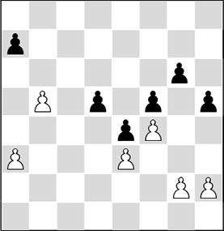
Position without pieces
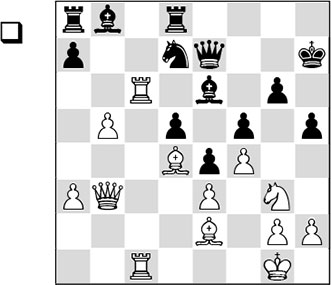
If we now take another look at the set-up of the pieces, we see that most of White’s pieces are actively placed. One of his pieces is doing absolutely nothing for the moment: the knight. It is a golden rule to make all your pieces participate in the game.
On the basis of the pawn structure, we see that d4 and g5 are beautiful squares for the knight. Since the d4-square is already used optimally by another white piece, g5 looks like the obvious square to send the knight to. With that, the solution to the problem of this position is quickly found. In the second diagram position White played the attractive move
1.♘h1!!
Putting the knight on the route h1-f2-h3-g5. Two exclamation marks for the originality of the idea in relation to the white player’s age (15!).
Black is powerless, as White also exerts strong pressure on the black position via the open c-file. Furthermore, White can occupy the long diagonal, for instance with his bishop on a1 and his queen on b2. The continuation is instructive.
The question should always be asked if White has tactical resources at his disposal. For example, 1.♗xh5 looks very promising, too. Closer examination teaches us that the black king can be smoked out if the piece sacrifice is accepted: 1…gxh5? (the only move is 1…♘f8, but also then, Black’s defending prospects cannot exactly be called rosy after the simple 2.♗e2) 2.♕d1! ♘f6 (the queen turns out to be overburdened after 2…♕f7

Analysis diagram
3.♖xe6! ♕xe6 4.♕xh5+ ♔g8 (another convincing line is 4…♕h6 5.♕f7+), after which the white pieces cooperate fantastically in the attack: 5.♘xf5 ♘f8 6.♖c6 ♕d7 7.♕h8+ ♔f7 8.♖f6+ ♔e8 9.♕xf8#) 3.♘xf5! and also here, Black won’t be able to hold.
1…♘b6 2.♘f2 ♖d6 3.♘h3 ♔h6 4.♘g5
The knight has been manoeuvred straight to the strong square g5, and now virtually all White’s pieces are involved in the game.
4…♖xc6 5.♖xc6
This puts Black in an annoying pin, but he had to do something against the capture of his bishop, and against the fact that his rook on a8 is doing nothing.
5…♗d6
After, for instance, 5…♗f7, 6.♕b4! is terribly strong. After 6…♕e8 (now 6…♕xb4 is out of the question as it loses a piece after 7.♘xf7+ ♔h7 8.axb4), White continues his mission with the pretty queen switch 7.♕e1!, which introduces a combination that cannot be parried. For example, 7…♘c4
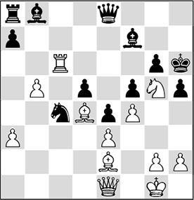
Analysis diagram
fails to 8.♗xh5! and the black king is smoked out. Now even the bishop on e2 turns out to participate in the battle! 8…♔xh5 9.♕g3 with unavoidable mate.
6.♕c3
This way White makes quick progress. Setting up a battery of queen and bishop would take a little too long.
Perhaps even better was 6.♗e5 ♖d8 7.♕b2, after which the black player can no longer cope with the many threats
6…♖g8
On, for instance, 6…♖c8, 7.♗xb6 wins because 7…♖xc6 fails to 8.♕h8+ and mate.
7.♗e5
Winning material. The bishop on d6 is the most important defender (square c7 and the sixth rank!), and now that it is exchanged, the black building (or should we say: rubble?) is further demolished.
We cannot blame Piket for not finding the most vigorous variation. The moves he plays are entirely logical and they result in an easy win. However, here again, a hidden combination was possible that can only be unearthed with a strong chess program. Once again we see that if you have reached a strategically superior position where all your pieces are well-placed, there will always be something special to play for. The beautiful thing is that White needs all his pieces to achieve this magnificent mate picture.
For your instruction and your amusement, we give the following spectacular variation: 7.♗xh5!! gxh5 (curiously, the black king is again caught in a mating net after 7…♔xh5 8.♕e1, and there is nothing sensible to be found against the threat of ♕e1-g3-h3) 8.♖xd6 (it’s incredible that all this is possible) 8…♕xd6 9.♗g7+! (this is the actual point of the entire combination. Here it becomes clear why White had to start first with the bishop sacrifice ♗xh5. With that move he has dismantled the protection that the black king enjoyed from the pawn on g6. And that factor presages this magnificent mating line) 9…♖xg7 10.♕f6+ ♖g6 11.♕h8#.
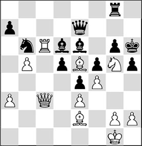
7…♖c8 8.♗xd6 ♕xd6 9.♖xc8
Everything wins here.
9…d4 10.♕c7
10.♘xe6 dxc3 11.♖h8# was another cute line.
10…♕d7 11.♖h8+
1-0
The fact that Jeroen Piket so quickly found the right plan in this position at such a young age, can be ascribed to his deep understanding of the game and to his excellently developed positional feeling. But of course, he was also trained to discover the right features in the position, which put him on the right track.
3.3 Karpov and Mazukevich’s line of thinking
We have now established that a well-founded positional assessment can be made by evaluating the characteristic features of the position in the right way. Each position has various features, and the trick is to discover (or to distinguish) what is important and what is not. In this chapter we shall try to achieve a line of thinking that enables you to detect the important features of an arbitrary position. If everything goes right, you will then have taken hold of the right orientation in the position, enabling you to conceive the correct plan on that basis.
In their book Stellungsbeurteilung und Plan, Karpov and Mazukevich employ seven criteria to assess a position.
Next, a plan is formed that is in logical conformity with the assessment of the position. In fact, a kind of research is carried out, in which the white position is compared with the black position.1
I have adapted this method slightly to analyse a position, and I have tested it in training sessions with young players. They were asked to ‘think aloud’ with the help of the following questions.
- What is the material balance?
- Are there any (direct) threats?
- How is the safety of both kings?
- Pawn structure:
- Where are the open lines and diagonals?
- Are there any strong squares?
- Who is controlling the centre?
- Who has more space and where on the board does he have it?
- Which pieces are active and which are not?
In the following game, the interaction between pawn formation and set-up of pieces is demonstrated splendidly by the white player.
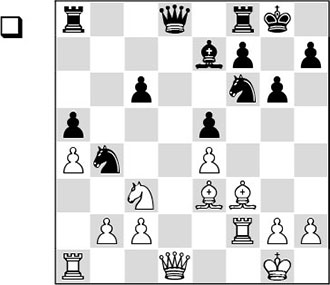
This is an important moment to choose a plan. The only open file is the d-file, whereas White can exert pressure along the half-open f-file. Moreover, White possesses the bishop pair, and the light squares may play an important role.
1.♕f1!
A beautiful, multifunctional move. White increases the pressure along the f-file, while the queen vacates the d1-square for the queen’s rook. In some cases, the queen can try to take the black position under control from the beautiful c4-square.
1…♕c8 2.h3
White anticipates the threat of 2…♘g4.
2…♘d7
Also possible was 2…♕e6, but then White would play his bishop to c4 (see also the comment to the first move).
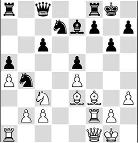
The question is: how should White increase the pressure on the black position?
3.♗g4
Very well spotted by Karpov! Due to the annoying pin on the knight, Black must weaken his king position further.
Incidentally, 3.♕c4 was another good possibility to pose Black problems.
3…h5
A crucial moment. Will White trade off his bishop on d7 or not?
4.♗xd7
A principled decision. With a heavy heart, White parts with his bishop pair, but this is a good decision. He wins time and can keep exerting pressure.
4…♕xd7
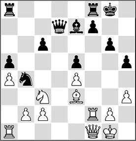
5.♕c4
Obviously, the black queen must be kept away from the beautiful square e6. At the same time, White maintains the pressure on the weak point f7.
5…♗h4
Spassky is defending creditably. The white rook is kicked off the f-file, and in future he hopes to exploit the ‘hole’ on g3. If he gets the time for it, he wants to brick up the f-file with …♗h4-g3, followed by …h5-h4, …g6-g5 and …♗g3-f4.
6.♖d2 ♕e7
Another crossroads, where White must choose between several attractive continuations.
7.♖f1!
Better than the tempting 7.♗c5, which only leads to unclear complications after 7…♕g5 8.♖d7 ♘xc2 9.♗xf8 ♖xf8.
7…♖fd8
Black enters the battle for the d-file. His minor pieces are hindering White’s further development. With his next move, White kills several birds with one stone. But first we will subject the position to a closer examination.
As said, it is useful to put the problems of the position into words point by point. For this purpose, we use a variant of the line of thinking developed by Karpov and Mazukevich in their book Stellungsbeurteilung und Plan. With the help of a number of points, the authors help us to achieve a correct assessment of the position, and derive the right plan from that:
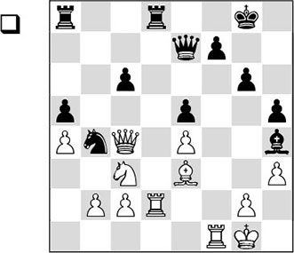
1. Material balance
Material is even.
2. Are there any direct threats?
White does not have any direct threats; however, Black is threatening to win a pawn with 1…♖xd2 2.♗xd2 ♘xc2.
3. The safety of both kings
We have a special case here. Normally speaking, important indications about safety are given:
- counting the number of attackers;
- counting the number of defenders;
- counting the number of pawns.
If in this case we count the pawns that are in the neighbourhood of the king (three for Black versus two for White), we are inclined to think that Black’s king is safer than White’s. However, that is not the case, since the placement of the pawns is very unfavourable for Black. His king’s position contains two enormous weaknesses. The pawns on g6 and h5 would be better placed on g7 and h7. Since that is not the case, the dark squares in this area are significantly weakened. On the other hand, the white king is fairly well protected, as there are no black pieces that can approach it for the time being, and there is also a sufficient amount of defenders at hand.
4. Pawn structure
When studying the pawn structure, we constantly look which pawns are weak, where the open and half-open files are, which diagonals are of importance, and where we can spot strong squares.
What can we read from the current pawn formation?
The control of the open files works in White’s favour. Only the d-file is completely open, and it is contested between both sides. Of the half-open files, White’s f-file is more important than Black’s b-file. This is because it is along the f-file that White’s pieces will eventually be able to launch threats against the weakened black king position (see schematic analysis diagram).
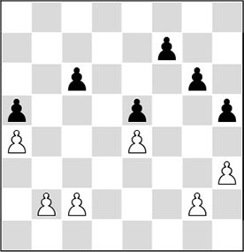
Analysis diagram
In the pawn structure we also see that both sides have three pawn islands. However, we can make a small distinction in the weaknesses of the various pawns. The isolated pawn on e4 can hardly be attacked by Black, whereas its ‘loose’ colleague on c6 is badly in need of protection.
Two pawn pairs are fixed: a4/a5 and e4/e5. Since both sides have a dark-squared bishop on the board, this factor is to White’s advantage.
A lot can also be said about strong and weak squares. From the pawn structure we can read that White can try to exploit the beautiful squares c4, c5, and later on also the dark squares on the kingside. Black also has his eye on a weak point in the white camp: square g3! We have already seen that the bishop would like to settle down on this square (or on the f4-square), nipping all White’s actions along the f-file in the bud.
Finally, we will have to examine how the situation is with respect to the centre and space. Since the pawns on e4 and e5 have advanced ‘equally far’, there is no side that has more space. However, thanks to his occupation of the beautiful c4-square White has a little more influence in the centre. At the same time, we should note that the weak pawn on c6 fulfils a useful function. The white c3-knight cannot go to d5, so that this piece is not participating in the game for the time being.
5. Activity
This is perhaps the most essential aspect of the game. When conceiving a plan, we have to look especially which pieces are active and which are passive. Only if we see what a position is really about, can we start to feel which moves should be considered. In practice, this turns out to be much more difficult than you would expect at first sight.
Let’s conduct a small test. Without reading further, write down three moves for White that you think would be considered by Karpov, or that you might play yourself. I have also done this test with some of Holland’s best junior players. Without examining the proposed moves further, we continued on the path of unveiling the secrets of this position.
As a small addition to Karpov and Mazukevich’s line of thinking, I have invented the following guideline.
Compare the activity of the same piece types:
a) The queens
White’s queen is much more active. It is attacking the weak points c6 and f7. Black’s queen has an exclusively passive role.
b) The rooks
The opponents on the d-file are equally important – the white rook on the f-file is more active than its counterpart on a8. Therefore, Black would be helped by exchanging them.
c) The bishops
On the basis of the pawn formation we have already established that White’s bishop is much better than Black’s. Apart from the fact that it controls the important square d4, it can move to c5 (so as, in an endgame, to possibly take aim at the a5-pawn) or to h6, from where it would support an attack on the king. However, we shouldn’t underestimate the role of the black bishop either. As we have seen, it threatens to enter on g3 and in the right circumstances it could settle on the f4-square, after which White’s attacking chances would disappear like snow in summer.
d) The knights
The white knight is doing nothing at the moment. The black knight, however, is active for the time being (in view of the annoying attack on c2), and it also keeps the pawn on c6 protected.
With this last observation we have hit the nail on the head, and we finally approach the essence of the position. Let’s think aloud for a little longer before we draw any conclusions.
White would like to start an attack on the black king via the f-file, and for that purpose he will have to keep at least one pair of rooks on the board. In order to launch the attack, he will have to prevent the black bishop from keeping the f2-square covered, and from becoming even more annoying on the square g3. Furthermore, he will have to find a solution to the threat of …♖xd2 in a useful manner.
Now a little bell should start ringing in your head! White sees that his knight is doing nothing. Therefore, it should be repositioned. But where? Repositioning the knight also has other advantages, since it enables White to introduce the pawn move c2-c3, kicking away the temporarily active black knight. So that is a nice extra.
But where should White play his knight? Not to a2, as there it will be traded off by Black. To d1 or e2? That isn’t very attractive either after 8…♖xd2, as then White must take back with this well-placed bishop, losing activity.
What actually is the future of the white knight?
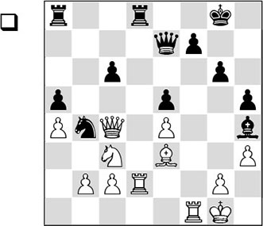
8.♘b1!!
Please write down two exclamation marks! And be honest: did you consider this move? If yes, then you have good positional feeling! If no, this isn’t the end of the world, but in that case you will have learned something important now.
In the further course of the game it will become clear that after this move the knight fulfils an important role in the white concept. The knight will be repositioned on f3, where it can lend a hand with the intended kingside attack. In passing, it will also attack the annoying intruder on h4, which will have to make way, since a trade of knight against bishop would weaken the dark squares on Black’s kingside still further.
Moreover, White will take aim at the pawn on e5, giving Black still more problems to deal with. And the quiet knight move has yet another merit: after 8…♖xd2 White can comfortably take back with the knight. Also, the threat of c2-c3 has become acute, with which the black knight will be driven away from b4 and the pawn on c6 will be hanging.
8…♕b7
If you have thoroughly read the above argument, you now know that Black would gladly exchange a pair of rooks. But at this moment this would be highly unfortunate, since after 8…♖xd2 9.♘xd2 Black must keep protecting both his c6-pawn and his e5-pawn, while his bishop is about to be chased away from h4.
9.♔h2
Again, the only correct continuation. White should prevent …♗g3 at all cost.
9…♔g7
Understandably, Black moves away from the pin on the a2-g8 diagonal and he covers the square h6.
10.c3 ♘a6
The contours of White’s plan are starting to take shape. Black’s once so proud knight is suddenly condemned to the role of a passive onlooker.
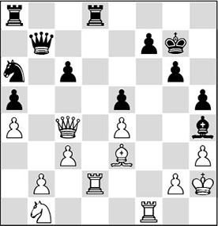
11.♖e2!
I could also have presented you this position and again asked: assess the position, and what is the plan? This time we will not elaborate for so long. White’s line of thought is more or less as follows: he prepares a kingside attack, and for that purpose he sends a knight in the direction of the black king. Therefore, the square d2 has to be vacated, and since White still wants to keep the rooks on the board, he now removes his rook. After all, Black cannot make use of the d-file. How simple does all this sound! But how hard it is if you have to think it up for yourself!
11.♖xd8 would not be to the point here. Black would be better off after this swap. And you do not play a move like 11.g3 either unless it’s really necessary. Karpov will not voluntarily allow weaknesses in the vicinity of his own king. Weakening the second rank is always risky if your king is on it.
11…♖f8
Black realizes that he must take counter-measures against the threats along the f-file, and at the same time he vacates the square d8 for his bishop, which he has to be able to retreat after the next move.
12.♘d2 ♗d8
Capturing on b2 was out of the question on account of 13.♘f3, winning a piece. Why go to this unfortunate square?, you may ask. The answer is that the threats against the weakened king position are starting to become acute. After 13…♗e7 14.♖ef2, Black must seriously reckon with various combinations.
13.♘f3 f6
This is no picnic, but what else? The pawn on e5 was hanging.
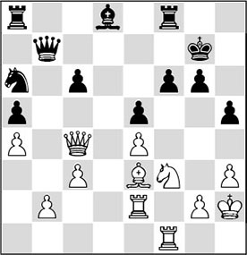
14.♖d2!
Flexible thinking is one of the hardest things in chess. Grandmasters are generally good at it. Just when we have aimed everything at an attack on the king, Karpov plays this paradoxical move. He has gone through all this trouble to conquer the f-file, and now he doesn’t make use of it!
But Karpov has seen further. With …f7-f6, the f-file has been more or less closed, but a new weakness has been created: square e6 has become a gaping hole! Now that Black’s pieces are disharmoniously positioned, White makes use of the d-file, on which Black cannot oppose for now.
14…♗e7 15.♕e6 ♖ad8
But White didn’t want to exchange rooks, did he?, many despairing readers will ask. But he does when there is a concrete reason for it – and that is why we always have to keep thinking flexibly!
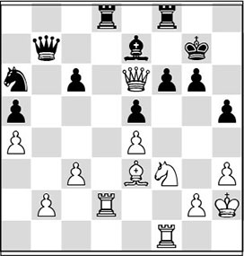
16.♖xd8!
Right! The rook swap is appropriate now.
16…♗xd8
16…♖xd8 fails to 17.♘xe5 ♕c7 (mate is unavoidable after 17…fxe5 18.♖f7+ ♔h8 19.♕xg6) 18.♕f7+ ♔h8 and now 19.♕xe7! ♕xe5+ (quite pretty is the knight fork: 19…♕xe7 20.♘xg6+ ♔g7 21.♘xe7 and White wins) 20.♕xe5 fxe5 21.♖f6 and White wins a second pawn.
17.♖d1!
That d-file again. And again Black cannot oppose. See how beautifully Karpov has exposed the weaknesses in the black camp. The pawn move …f7-f6 has mortally weakened the seventh rank.
17…♘b8 18.♗c5
Finally a move with this bishop, but this is a deadly accurate one.
18…♖h8
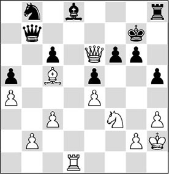
Now White can crown his work. What is the best way to do that?
19.♖xd8!
1-0
The final blow! The black bishop, an important defender of the black bastions, is eliminated. Spassky didn’t feel like sticking around waiting for the line 19…♖xd8 20.♗e7 ♖e8 21.♕xf6+ ♔h6, as now 22.♘h4 ends all resistance.
I have tested this line of thought with players who were my pupils. One of them was the highly talented Jan Werle, about whom I have written a few words in Chapter 1.
Since Werle didn’t exactly live near me, we trained at my home for a few weekends every year. In between those sessions I sent him training material that he worked for himself with. In the strength/weakness analysis I made about him in those days, I came to the conclusion that his tactical level left something to be desired, and with diligent work he caught up enormously in a short period of time. That was one of the reasons why he made rapid progress. Thus, at a certain moment we returned to the area where both our hearts lay: strategy. Werle was one of the first pupils with whom I tried the above-mentioned line of thinking for the solving of difficult problems. In spite of his youthful age, he solved many of these difficult strategic exercises excellently. Due to my approach the results of many of my pupils deteriorated first, as the new line of thinking was not so easily integrated in their game. Even a great talent like Werle suffered a few disappointments in the beginning. But he had faith in this training method and continued on the chosen path. And it didn’t take him long to start achieving some great results. It was no surprise that he soon achieved the title of international master.
Today, many years later, he is a strong grandmaster who produces neatly polished positional games, which I play through with great pleasure. Jan was – justifiably – very contented with the following game.
SL 7.4 (D44)
1.♘f3 d5 2.d4 c6 3.c4 ♘f6 4.♘c3 e6 5.♗g5 dxc4 6.e4 b5 7.e5 h6 8.♗h4 g5 9.♘xg5 hxg5 10.♗xg5 ♘bd7 11.g3 ♗b7 12.♗g2 ♕b6 13.exf6 0-0-0 14.0-0 ♗h6 15.♗e3 c5 16.dxc5 ♘xc5 17.♗xc5 ♕xc5 18.♗xb7+ ♔xb7 19.♕f3+ ♕c6 20.♘e4 ♖d4 21.♖fe1 ♖hd8
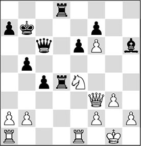
22.♖e2!
An improvement on a blitz game Ivanchuk-Piket, Wijk aan Zee 1999, where White continued 22.h4 ♖8d5 23.♖e2 a5 24.♖ae1 b4 25.♔h2 ♔b6 26.♕g4. Now Black played 26…♗d2, but after 26…c3 27.bxc3 bxc3 28.♖c2 ♗d2 29.♖b1+ ♖b5, he would have had absolutely nothing to fear.
22…♖8d5 23.a3!
With this deep strategic thought Werle intends to restrict the black pawn majority somewhat. At the same time, he would prefer to keep the rook on the a-file. The reason for this will surface much later.
23…a5 24.h4
Thus Werle treads in Ivanchuk’s footsteps, but he has weaved some refinements into the play. The pawn is pushed forward because this is White’s passed pawn that will have to do all the hard work later on. Somewhat less obvious is that White clears the h2-square for his king, so that it won’t have to remain vulnerable on the back rank.
24…b4?!
Probably it is this absolutely logical move which causes huge problems for Black. Perhaps he should have opted for 24…♔b6 or 24…♖f5, even though in that case White could have achieved an advantage with the same concept as in the game.
25.axb4 axb4 26.♔h2
The king has created a safe shelter for itself. Thus, the white player now has free hand to start some action of his own.
26…♔b6
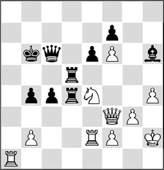
27.♕h1!!
This is the key move for the entire concept that Werle had devised when he played his 23rd move. This is a suitable moment to take a closer look at this position – what’s it all about, actually? The knight on e4 is the ‘binding agent’ in the white position. It seizes squares in the enemy camp, protects the f6-pawn, keeps an eye on the d2-square, gives extra protection to the weak point f2, and makes the pawn push …c4-c3 unattractive as well. In fact, the knight enables White to keep full control over the following course of events.
Jan Werle told me that before this tournament he had worked through Nimzowitsch’s book My System, and he had been especially inspired by the chapter on ‘over-protection’. In the spirit of Nimzowitsch, the strongest piece on the board needed to be protected as thoroughly as possible.
With his last queen move White has vacated the f3-square for his pawn, so that he will be able to meet the possible threat of …♖d5-e5 with f2-f3. This would give the knight natural protection. Thus, White will not have to protect the knight with ♖a1-e1, and he can keep the rook on the a-file.
The queen move has yet another purpose. The devious ♕h1-b1-a2 has suddenly become possible as well, and with it White will suddenly be able to harass the black king. By the way, another merit of ♕b1 is that it maintains the extra protection of the knight. The weakness of White’s second rank hardly plays a significant role – not only because the d2-square is protected from an invasion by the black rooks, but also because the white king has a nice hiding place on h3, if necessary. All in all, this is a beautiful, multifunctional move, which has been introduced by a few problem-like moves that are signs of great strategic understanding.
Remarkably enough, this idea (in combination with the manoeuvre ♕h1-b1) was also found in no time by the 14-year old talent Quinten Ducarmon from the Dutch province of Zeeland.
The sharp move 27.♘g5!?, which was thought up by the talented 15-year-old girl Anne Haast, is not easy to combat:
A) Now 27…♕c7? would be wrong in view of the pretty piece sacrifice 28.♘xe6! fxe6 29.♖xe6+ ♖d6 (29…♔b5 30.f7) 30.♖e7 ♕c6 31.♕h5!
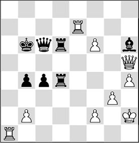
Analysis diagram
and the double threat of 32.♕a5 and 32.♕xh6 decides the issue in White’s favour;
B) 27…♖d3 28.♕h5 ♖d1 29.♖xd1 ♖xd1 30.♘e4 is also very good for White because both the ♗h6 and the f7-pawn are hanging. If Black tries 30…c3 here, he will also lose: 31.bxc3 bxc3 32.♖a2! ♕d5 33.♕e2! – the unsafe position of the black king continues to stand out, and now 33…♕d3 fails to 34.♘xc3!;
C) 27…♗xg5! (this is the move Black should rely on) 28.hxg5 ♖d3 29.♕e4 ♖3d4 30.♕e3 e5, and the damage for Black is limited.
Another logical move to try to ‘smoke out’ the black king is 27.b3!?.
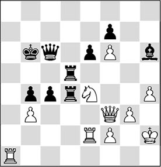
Analysis diagram
However, Black replies with 27…♖f5 28.♕g2 cxb3, when he will have nothing to fear.
27…♖a5
Black does not feel like allowing the doubling on the a-file, but with this move he gives up the strong pressure he had in the centre.
28.♖xa5 ♔xa5 29.f3 ♔b5
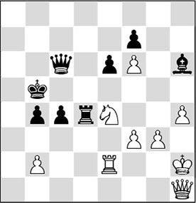
30.♕a1!
White manages to lure the black pieces even further out of their best positions. He introduces a few nasty threats, as becomes apparent from the mistakes that Black can make in this position.
30…♕a6
A) 30…♗f8? 31.♕a7! ♖d8 32.♕xf7, and the white pawn avalanche decides;
B) 30…♕b7 31.♘c3+! bxc3 32.bxc3, winning material, as Black can no longer cope with the double threat of ♖b2+ and cxd4;
C) 30…♖d8 31.♕a7 ♖d7 32.♕b8+ ♕b6 33.♕h8 ♗e3 34.♕e8, and also here, complete chaos is created among the black pieces.
31.♕g1
It is amusing to see how the white queen conducts her demolition job from the back rank. This reminds me of a funny position:
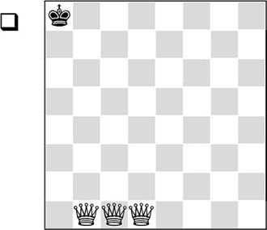
White has to give mate without taking his queens off the first rank. The solution is very artistic: 1.♕f1 ♔a7 2.♕h1 ♔a6 3.♕hg1 ♔a5 4.♕gf1 ♔a4 5.♕ce1 ♔a3 6.♕a1+ ♔b3 7.♕eb1#.
After the text move, the black rook is under threat.
31…♕b6
In my opinion, 31…♖d5 was relatively better, but also then White would be able to carry through his winning plan unhindered, as in the game.
32.♔g2
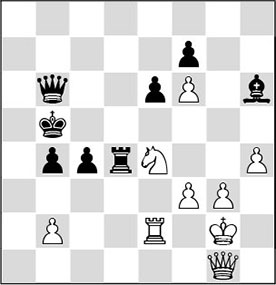
Also very interesting was 32.♖c2!?, in order to maintain the pressure. Black can hardly move a piece, since after a rook move he would lose the c4-pawn: 32…♖d3? 33.♕xb6+ ♔xb6 34.♖xc4.
32…♖d3
In desperation, l’Ami seeks refuge in an endgame, but this won’t save him. Here, 32…♕d8 was the rather unattractive alternative, after which White continues with the very strong 33.♖e1!, enabling the other rook to be deployed on the a-file. It is not clear what Black can do about this.
33.♕xb6+ ♔xb6 34.g4 ♗f4 35.g5
At first sight things do not look so bad for Black, but all is not what it seems. White’s pawn mass is much more mobile than Black’s. Please note how strong the knight is compared to the bishop in this position.
35…c3?!
Black plays his trump card, but this backfires immediately. He should have chosen a much more prophylactic set-up with 35…♖d5. The h4-h5 push must be stopped as long as possible, and at all cost. Still, this wouldn’t prevent White from preparing the march of his pawns with ♔g2-h3-g4.
36.bxc3 bxc3 37.♖c2
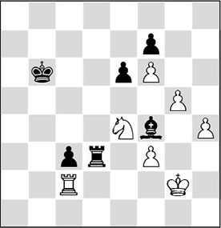
37…♗d2
It’s hard to give Black good advice here. The exchange sacrifice 37…♖d2+ 38.♘xd2 cxd2 also backfires immediately in view of the pointed 39.♖xd2! ♗xd2 40.♔g3 ♔c6 41.♔g4 ♔d7 42.h5
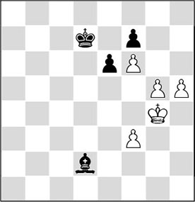
Analysis diagram
and the h-pawn will march on unhindered to its promotion square.
38.♔f2 ♔b5 39.h5!
An excellent move that ends all resistance.
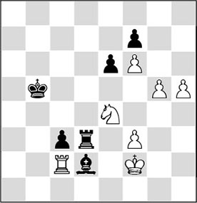
Black resigned. A possible variation is: 39…♔b4 40.g6 ♖d8 41.g7 ♔b3 42.♖xc3+ ♗xc3 43.♘xc3 ♔xc3 44.h6 and the white pawns have carried the day!
In the comments that I asked him to write with reference to my analysis, Werle himself writes:
‘I am very pleased that this game gets more recognition now. After the Dutch Championship, my duel with l’Ami was crowned the best game of the tournament together with the confrontation Van Wely-Smeets (where the Botvinnik was more or less refuted) on chesspro.ru, which is a prestigious chess website. My former second, grandmaster Zviad Izoria, who was in the United States at the time, was also highly impressed.
In the Netherlands we hardly heard a thing about it. I am glad that now more people will get the idea that strategic chess can also be fantastic chess. In my opinion, this is my best game ever, and I am very proud of it. There have been games where I had some tactical violence on the board, games that provided a good show, but they didn’t give me the satisfaction I felt after this game.’
These are nice words that emphasize that positional play can indeed be beautiful. And they also prove that Jan is a true lover of the game!
Footnote
1I have taken the liberty to make an adaptation to this system given by the authors Karpov and Mazukevich, which was not well-ordered in my opinion. Of course, I have kept the essence of the system intact.